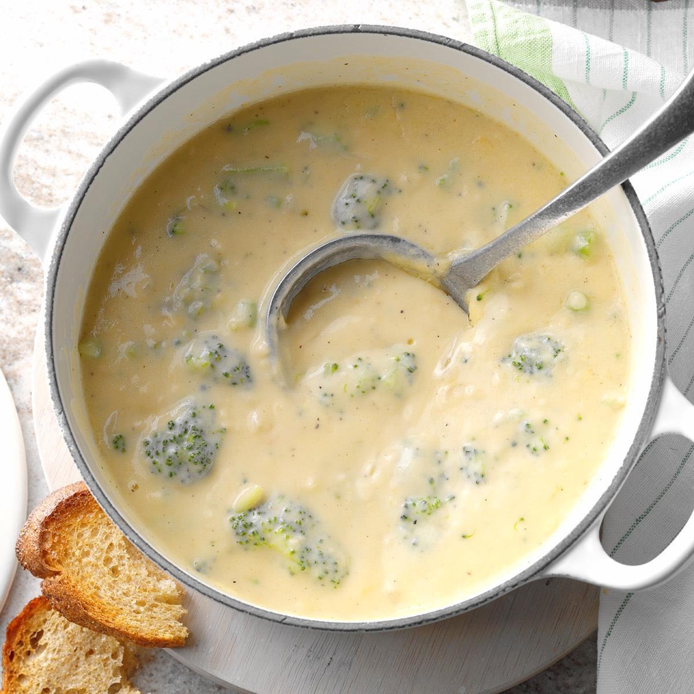

Cheesy Broccoli Cauliflower Soup

Description
A deliciously cheesy way to get your veggies in! Mixing broccoli,
cauliflower, and a blend of cheeses, this hearty soup will fill
your belly with warmth.
Ingredients
- 1 Large Head Broccoli
- 1 Large Head Cauliflower
- 2 Large Carrots (Chopped)
- 1 Onion (Chopped)
- 2 Cloves Garlic (Pressed)
- Olive Oil
- 1 Stick Butter
- 1/4 Cup Flour
- 4 Cups Chicken Broth
- 4 Cups Half and Half
- 1/4 Cup Sour Cream
- 2 Kraft American Singles
- 2 Cups Shredded Cheese (Any will work, chedder or colby
work best)
- Salt and Pepper to Taste